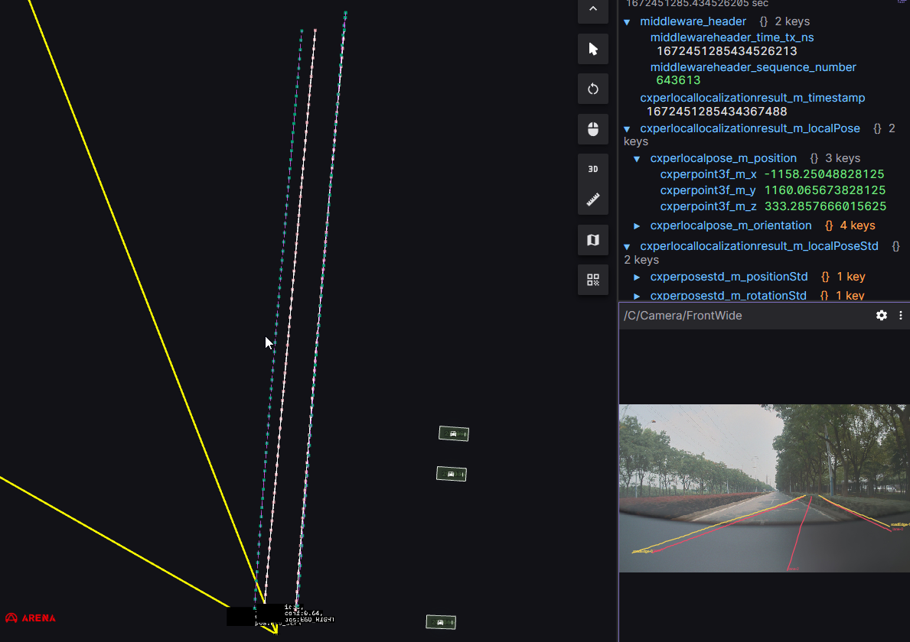

WR Viper problems_0813
Based on the WR 607 platform road trial data feedback
|
|
Problem |
Picture |
Ticket |
Data |
|
1 |
Self -stop, unobstructed The Lane Line is Seriously Identified: 1) The Huangxu line does not see in the image domain (occasionally see a few frames, it is very shaking, you must do the WR viper as tracking), 2) The road on the left is available in the image domain, and the topic sent out by BEV does not 3) Most of the edge lines on the left are not recognized, and occasionally appear several times in the image domain |
|
CNWVIII-56951 - Jira issue doesn't exist or you don't have permission to view it. CNWVIII-56955 - Jira issue doesn't exist or you don't have permission to view it. |
\\bosch.com\dfsrb\DfsCN\DIV\XC\Engineering\domain\WAVE3\00_DataExchange\000_Problem_Data\01_Driving\OT2\20230813\20230813\20230813141122\11611C_20230813141122075051_AOS_merge.bag |
|
2 |
The lane line is seriously identified: 1) 27.9 ~ 29.2 seconds occasionally a vehicle appears, and the lane line has a few frames. 2) The length range of the length range of the 13 ~ 18 seconds has a significant jump in each frame of the length range of the lane line. 3) After 14 seconds, the left side of the left road disappears 4) There are obvious jumps on the left and right positions around 29.5 seconds |
|
CNWVIII-56938 - Jira issue doesn't exist or you don't have permission to view it. https://rb-tracker.bosch.com/tracker08/browse/CNWVIII-56912 https://rb-tracker.bosch.com/tracker08/browse/CNWVIII-56914 |
\\bosch.com\dfsrb\DfsCN\DIV\XC\Engineering\domain\WAVE3\00_DataExchange\000_Problem_Data\01_Driving\OT2\20230813\20230813\20230813141911\11611C_20230813141911388036_AOS_merge.bag |
|
3 |
The tail of the lane is messy |
|
CNWVIII-56959 - Jira issue doesn't exist or you don't have permission to view it. CNWVIII-56960 - Jira issue doesn't exist or you don't have permission to view it. CNWVIII-56964 - Jira issue doesn't exist or you don't have permission to view it. |
\\bosch.com\dfsrb\DfsCN\DIV\XC\Engineering\domain\WAVE3\00_DataExchange\000_Problem_Data\01_Driving\OT2\20230813\20230813\20230813142118\11611C_20230813142118431999_AOS_merge.bag |
|
4 |
There are many problems with rootdge 1) FOV is too narrow, and the vertical is shorter than the side lane line 35M 2) Intermittent |
1） 2) Demand is given at the same time, one front and back, and the current WR is intermittently continued.
|
CNWVIII-56966 - Jira issue doesn't exist or you don't have permission to view it. CNWVIII-56967 - Jira issue doesn't exist or you don't have permission to view it. CNWVIII-56969 - Jira issue doesn't exist or you don't have permission to view it. CNWVIII-56963 - Jira issue doesn't exist or you don't have permission to view it. |
\\bosch.com\dfsrb\DfsCN\DIV\XC\Engineering\domain\WAVE3\00_DataExchange\000_Problem_Data\01_Driving\OT2\20230813\20230813\20230813142118\11611C_20230813142118431999_AOS_merge.bag |
|
5 |
incident 11611C_20230811114346205487 |

|
CNWVIII-57051 - Jira issue doesn't exist or you don't have permission to view it. CNWVIII-57053 - Jira issue doesn't exist or you don't have permission to view it. CNWVIII-57054 - Jira issue doesn't exist or you don't have permission to view it. CNWVIII-57055 - Jira issue doesn't exist or you don't have permission to view it. CNWVIII-57050 - Jira issue doesn't exist or you don't have permission to view it. |
\\bosch.com\dfsrb\DfsCN\DIV\XC\Engineering\domain\WAVE3\00_DataExchange\000_Problem_Data\01_Driving\OT2\20230811\20230811114346\11611C_20230811114346205487_AOS_merge.bag |